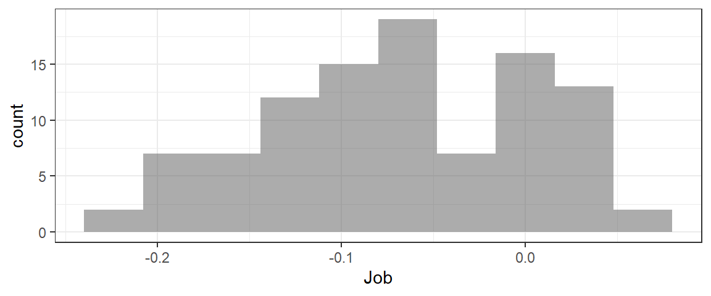

Sample Statistics
To find a confidence interval for a population parameter, we first have to compute an estimate of that parameter from a dataset. A 95% confidence interval can be:
\[ \text{sample statistic} \pm 1.96*SE\]
So to compute it, we need to find the sample statistic and the SE - the standard error of the sampling distribution.
In other words, we first need to be able to compute a sample statistic! The sample statistic is simply the quantity of interest, computed for the observed dataset.
Sample Stat Example: Mean
For example, if you are interested in \(\bar{x}\), the mean number of hours that intro stat students sleep every night (using variable Sleep from the dataset students), the sample statistic would be:
mean(~Sleep, data = students, na.rm = TRUE)## [1] 7.343511(Note the “na.rm=TRUE” input - this tells R to ignore any missing values in the dataset when computing the mean. If you don’t include this input, then if there are missing values (NA) in the data, the result of your calculation will also be NA.). Like this undesirable result:
mean(~Ozone, data = airquality)## [1] NASample Stat Example: Proportion
Another example: what if you wanted to use the variable Rank in the students dataset to estimate \(\hat{p}_{oldest}\), the sample proportion of intro stat students who are oldest siblings?
prop(~Rank == 'Oldest', data=students)## prop_TRUE
## 0.3435115Logical operators are often useful for computing proportions. Here are the main ones you may want to know:
- equals:
==(note double equal for checking if things are equal) - does not equal:
!= - is greater than (less than):
>(<) - is greater than (less than) or equal to:
>=(<=)
The thing on the right of the logical operator should be in quotation marks if it is the value of a categorical variable, or not in quotation marks if it is numeric.
Sample Stat Example: Diff in Means
More complicated sample statistics can also be computed. For example, what if the parameter of interest is the difference in mean GPAs (variable GPA) between intro stat students who plan to do further education after graduating from college, and those who plan to get jobs (variable Plans)?
We can compute the mean for both groups:
mean(~GPA | Plans, data=students)## Educ Job
## 3.447044 3.382988Then we just need to take the difference between them – we can use the function diff() to do it.
diff(mean(~GPA | Plans, data=students))## Job
## -0.06405607Notice that the output is labelled Job. Which way did the subtraction happen?
Sample Stat Example: Diff in Proportions
We can also compute differences in proportions. For example, let’s find the difference in proportions male and female intro stat students who plan to get jobs after college graduation. First, we can make a table of the two relevant variables, Gender and Plans, using the input format='prop' to get the results as proportions rather than number of observations:
tally(~Plans | Gender, data=students, format='prop')## Gender
## Plans Female Male
## Educ 0.2941176 0.3968254
## Job 0.7058824 0.6031746We need to isolate just the second row of the table. We use hard brackets [] to do this, with the format [row, column]. Leaving row or column blank means “keep them all”, so to get all columns and row 2:
tally(~Plans | Gender, data=students, format='prop')[2,]## Female Male
## 0.7058824 0.6031746Then take the difference using diff().
diff(tally(~Plans | Gender, data=students, format='prop')[2,])## Male
## -0.1027077Sample Stat Practice
Your turn: What about computing…
\(\hat{p}_{youngest}\), The proportion intro stat students who are the youngest sibling in their family?
prop(~...=='...', data=...)str(students) #to get possible values of Rank variable
prop(~Rank=='...', data=students)prop(~Rank=='Youngest', data=students)Now, what about computing the median heart rate of intro stat students?
#use this line to get the names of the variables in the students dataset:
names(students)
# alternatively, you could use head() or glimpse() to do this.median(~..., data=...)median(~Heartrate, data=students)Next, compute the difference in mean top speeds driven (variable Topspeed) between students who have/haven’t gotten a speeding ticket while driving (variable Ticket).
Finally, compute the difference in proportion of intro stat students who exercise regularly (variable Exercise), between those who plan to get a job after Calvin and those who will attend more school (variable Plans).
A bootstrap sample
The main idea
To get a bootstrap sampling distribution, we will follow the process:
- Get a sample from the population (this is the dataset).
- Resample “bootstrap samples” from the sample. Each one should be the same size as the original dataset, taken with replacement from the dataset.
- Compute the sample statistic for every bootstrap sample.
- The collection of many sample stats is the bootstrap sampling distibution (BSD). The standard deviation of the BSD is called the standard error.
- Compute a confidence interval for the population parameter using the BSD.
To do this, we first have to think about how to take a single bootstrap sample from the data. We won’t have to do this step when using real data to compute a CI; we are just doing it here for illustration, to better understand how the resampling is done.
Examples
To get a bootstrap sample from a dataset, we will use the function resample(). Given a dataset, it takes a sample from the dataset with replacement and returns a “resampled” dataset with the same number of rows (but a somewhat different set of observations).
For example, to take one bootstrap sample from the students dataset, we would run the r code:
# do not copy and paste this code for use in homework.
# (you need many bootstrap samples, not just one)
resample(students)Note that no result will be printed to the screen when you run this code. It does work, though…
You try. How would you compute one bootstrap sample from the HELPrct dataset? (If your code runs without an error, it’s probably correct…but nothing will print to the screen as a result. You can use the hints to check your work.)
resample(...)resample(HELPrct)Remember - that was just for practice. Going forward, there is no real use computing ONE bootstrap sample – we always need to compute MANY of them to get a bootstrap sampling distribution.
Bootstrap sample stat
Example
For every bootstrap sample, we will have to compute the sample statistic.
To do this, the code will be almost exactly the same as the code used to compute the sample statistic from the original dataset. The only difference is that instead of data=dataset.name, you will input data=resample(dataset.name) so that the data used for the calculation is a boostrap sample.
Here’s an example of computing the sample stat for one bootstrap sample, if the parameter of interest is the proportion intro stat students who are the youngest among their siblings:
# don't copy and paste this code for homework problems.
# remember, you need to get MANY bootstrap sample stats...
# and this computes just ONE.
prop(~Rank == 'Youngest',
data = resample(students))## prop_TRUE
## 0.3740458Practice
Compute the sample statistic for one bootstrap sample, if the parameter of interest in the proportion of intro stat students who are the oldest among their siblings.
prop(~..., data = resample(...))prop(~Rank == ...,
data = resample(...))prop(~Rank == 'Oldest',
data = resample(students))What about the sample statistic for one bootstrap sample, if the parameter of interest is the difference in proportions male and female intro stat students who do exercise regularly?
diff(tally(...,...,...)[...])diff(tally(~...|..., data = resample(...), format = ...)[...,])diff(tally(~Exercise|Gender,
data = resample(students),
format = 'prop')[2,])BSD for a mean
Once we see how to compute the sample statistic for each bootstrap sample, the only thing we need to add to get the whole BSD (which is what we really want!) is to repeat the calculation many times (1000 or 10000) and save the results as a dataset.
For example, a bootstrap distribution for the mean GPA of intro stat students:
BSD <- do(1000)*mean(~GPA, data = resample(students))
glimpse(BSD)## Rows: 1,000
## Columns: 1
## $ mean <dbl> 3.490412, 3.402718, 3.339267, 3.470603, 3.368038, 3.390550, 3.345…Notice: all we added was do(1000)* at the start of the code! Now instead of taking one bootstrap sample and computing one bootstrap sample stat, it does 1000 (and stores the result for us)!
BSD for a proportion
resample() method
We can compute a BSD for a proportion in a similar way. For example, a BSD for the proportion intro stat students that are planning on grad school:
BSD <- do(1000)*prop(~Plans == 'Educ', data = resample(students))
glimpse(BSD)## Rows: 1,000
## Columns: 1
## $ prop_TRUE <dbl> 0.3816794, 0.3282443, 0.2519084, 0.3358779, 0.3511450, 0.412…Notice the somewhat strange variable name prop_TRUE…
shortcut rflip() method
There is another way (a bit of a shortcut) to find a bootstrap distribution that only works if the parameter of interest is one proportion. It uses the function rflip(), which flips an imaginary coin a certain number of times. You can specify the probability of getting “heads” on each imaginary coin-flip.
For the students data, the sample proportion wannabe-grad-students from the real data was 0.33 and the size of the dataset was 131 observations:
prop(~Plans == 'Educ', data=students)## prop_TRUE
## 0.3435115nrow(students)## [1] 131So each bootstrap sample is like the outcome of a set of n=131 coin flips with probability of “heads” (Educ), prob=0.33.
Thus, we can compute a bootstrap distribution via:
BSD <- do(1000)*rflip(n=131, prob=0.33)
glimpse(BSD)## Rows: 1,000
## Columns: 4
## $ n <dbl> 131, 131, 131, 131, 131, 131, 131, 131, 131, 131, 131, 131, 131,…
## $ heads <dbl> 48, 45, 51, 36, 41, 40, 49, 49, 43, 40, 45, 44, 36, 38, 50, 45, …
## $ tails <dbl> 83, 86, 80, 95, 90, 91, 82, 82, 88, 91, 86, 87, 95, 93, 81, 86, …
## $ prop <dbl> 0.3664122, 0.3435115, 0.3893130, 0.2748092, 0.3129771, 0.3053435…Your turn: try using rflip() to generate a bootstrap sampling distribution for the proportion intro stat students who have texted while driving (variable Texted, value Yes).
BSD <- do(...)*rflip(n=..., prob=...)BSD <- do(1000)*rflip(n=nrow(students),
prob=prop(~Texted == 'Yes', data = students))BSD for differences
Just as we could compute more complicated sample statistics (like differences in means or proportions), we can also find bootstrap sampling distributions for the corresponding parameters.
Example: BSD for difference in means
What about a bootstrap sampling distribution for the difference in mean GPA between students who plan to get a job after graduation, and those planning to do more schooling?
#sample stat
diff(mean(~GPA | Plans, data=students))## Job
## -0.06405607#BSD
BSD <- do(100)*diff(mean(~GPA | Plans,
data = resample(students)))
glimpse(BSD) #to see variable names in BSD dataset## Rows: 100
## Columns: 1
## $ Job <dbl> -0.03403335, -0.21444341, -0.17920972, -0.11593089, -0.07159795, -…gf_histogram(~Job, data=BSD)
Example: BSD for difference in proportions
Similarly, we can find a BSD for a difference in proportions - for example, the difference in proportion students who exercise, between those planning to get a job after college and those planning to do more schooling.
#sample stat:
diff(tally(~Exercise | Plans, data=students,
format='prop')[2,])## Job
## -0.06950904#bootstrap CI:
BSD <- do(100)*diff(tally(~Exercise | Plans,
data = resample(students),
format='prop')[2,])
glimpse(BSD) #to see variable names## Rows: 100
## Columns: 1
## $ Job <dbl> -0.015412748, -0.147759104, 0.042319749, -0.095930233, -0.21815718…gf_histogram(~Job, data=BSD, bins=10)
Your turn…
Try applying what you’ve learned so far to try a few more challenging examples.
First, find a bootstrap sampling distribution for the difference in mean hours of sleep per night (variable Sleep) between students who exercise, and those who don’t (variable Exercise).
BSD <- diff(mean(...,data=...))BSD <- diff(mean(...,data = resample(...)))BSD <- do(1000)*diff(mean(~Sleep | Exercise,
data = resample(students)))
glimpse(BSD)Now, try finding a BSD for the difference in proportion men and women who are oldest children:
BSD <- do(...)*diff(tally(..., data=..., format=...)[...])BSD <- do(...)*diff(tally(~... | ..., data = resample(students), format='prop')[...,])BSD <- do(1000)*diff(tally(~Rank | Gender, data = resample(students), format='prop')[2,])
glimpse(BSD)Finding the standard error
Once you have a bootstrap distribution, it’s easy to compute the standard error. Just compute the standard deviation of the bootstrap sampling distribution.
For example, recall that the proportion male intro stat students was 0.48 and there were 131 samples in the dataset. For the standard error of the bootstrap sampling distribution for this proportion, we could do:
BSD <- do(1000)*rflip(n=131, prob=0.48)
glimpse(BSD)## Rows: 1,000
## Columns: 4
## $ n <dbl> 131, 131, 131, 131, 131, 131, 131, 131, 131, 131, 131, 131, 131,…
## $ heads <dbl> 67, 62, 56, 55, 55, 70, 53, 63, 60, 63, 59, 59, 61, 65, 59, 52, …
## $ tails <dbl> 64, 69, 75, 76, 76, 61, 78, 68, 71, 68, 72, 72, 70, 66, 72, 79, …
## $ prop <dbl> 0.5114504, 0.4732824, 0.4274809, 0.4198473, 0.4198473, 0.5343511…SE <- sd(~prop, data=BSD)
SE## [1] 0.04290006Note that for the sd() calculation, the data should be the bootstrap sampling distribution, and the variable name in the formula should be the variable in the BSD - you may need to use head() or glimpse() to find out its name.
Your turn: try computing the SE for one of the previous examples.
Computing a 95% CI: 2SE method
Once you have the SE, it is possible to compute a 95% CI according to:
\[ \text{sample stat} \pm 2*SE\] (or, if you want to be more precise:)
\[ \text{sample stat} \pm 1.96*SE\]
For example,
BSD <- do(1000)*rflip(n=131, prob=0.48)
SE <- sd(~prop, data=BSD)
CI <- 0.48 + c(-1,1)*2*SE
CI## [1] 0.3930383 0.5669617Notice the c(-1,1). The c() “concatenates” or “pastes together into a list” the -1 and 1. The result is like \(\pm\) – the quantity \(2*SE\) gets added to AND substracted from the sample stat.
Your turn: try computing a 95% CI in this way for one of the previous examples.
Different Conf. Levels
Another way to compute a 95% CI is the use the function cdata(). This function finds the central X proportion of a data distribution, where X is any proportion you choose.
For example, we can find the central 0.95 proportion of a bootstrap sampling distribution; this will be the 95% CI!
BSD <- do(1000)*rflip(n=131, prob=0.48)
cdata(~prop, data=BSD, p=0.95)We can use this method to get a CI with any confidence level, not just 95%.
A 95% CI is wide enough to cover the central 95% of the sampling distribution. So, for example, a 99% CI is wider, because it’s wide enough to cover the central 99% of the distribution. Similarly, a 90% CI would be narrower, because it only needs to be wide enough to cover the middle 90% of the sampling distribution. But we can’t get these other confidence levels by adding/subtracting nice round multiples of the SE from the sample stat - instead we use cdata().
How would you compute a 98% CI using the same BSD as above?
BSD <- do(1000)*rflip(n=131, prob=0.48)
cdata(...)BSD <- do(1000)*rflip(n=131, prob=0.48)
cdata(~prob, data=BSD, p=...)Reporting your results
Reporting a CI “in context” means reporting the numbers, but also stating what they mean in the context of the problem and the dataset.
For example, instead of saying “The 95% CI is (0.393, 0.567),” you might say “We are 95% confident that the true proportion male intro stat students is between 0.393 and 0.567.”
We have to be quite careful about the way we speak about confidence intervals, because it’s easy to go wrong and make false statements. For example, we must avoid suggesting that there is a 95% chance that the true parameter value is in our CI. The truth is that the method of creating a 95% CI “works” 95% of the time, so that 95% of 95% CIs we generate will succeed in capturing the true parameter value, and the remaining 5% will fail. (If we just compute one CI, we don’t have any way of knowing if it’s one of the successful ones or not, so we can’t make any probability statements about our individual CI).
A safe, effective way of reporting CIs is to use the formula above:
We are …% confident that the true …… is between … and ….